Lecture 6: Database Design using the E-R Model
一、设计过程概述
阶段划分
- 初始阶段：明确数据库用户的数据需求。
- 第二阶段：选择数据模型，构建概念模式（Conceptual Schema）。
- 最终阶段：
- 逻辑设计：定义数据库模式（Schema），解决属性分配和关系模式划分。
- 物理设计：决定数据的物理存储布局。
设计原则
- 避免冗余：冗余可能导致数据不一致。
- 避免不完整性：设计需覆盖所有业务场景。
- 选择最佳设计：从多个合理设计中择优。
二、实体-联系模型(E-R Model)核心概念
1. 基本元素
| 概念 | 说明 | 示例 |
|---|---|---|
| 实体 | 可区分的对象（如学生、课程） | 学生(ID: 323114514) |
| 实体集 | 同类实体的集合（如所有学生） | student 表 |
| 属性 | 描述实体的特征（如学生ID、姓名） | name VARCHAR(20) |
| 关系 | 实体间的关联（如“学生选修课程”） | takes(ID, course_id) |
| 关系集 | 同类关系的集合 | advisor 关系集 |
2. E-R图表示
以下面这个E-R模型为例：
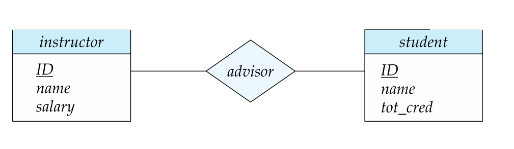
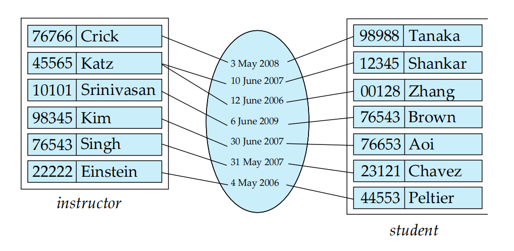
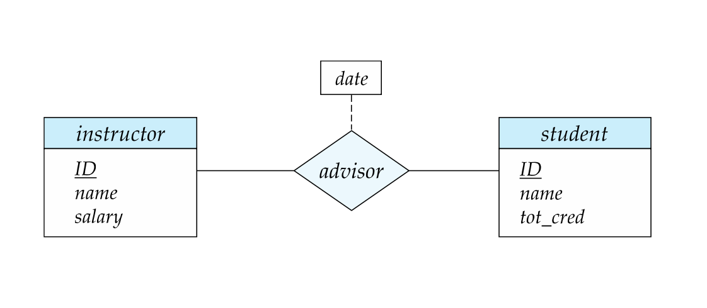
- 实体集：矩形框，属性列于框内，主键用下划线标出。
- 关系集：菱形(diamond)框，通过连线连接相关实体集。
- 属性：椭圆形。
详细讲解：
-
实体集（Entity Sets）
instructor（教师实体集）：
- 属性：ID（主键）、name、salary
- 作用：存储所有教师信息，每个教师通过唯一ID标识。
student（学生实体集）：
- 属性：ID（PK）、name、tot_cred
- 作用：存储所有学生信息，每个学生通过唯一ID标识。
-
关系集（Relationship Set）
advisor（指导关系）：
- 连接：通过ID的关系连接 instructor 和 student。
- 含义：表示教师对学生的指导关系。例如，教师ID22222指导学生ID44553，我们可以写\((22222, 44553) \in advisor\)。
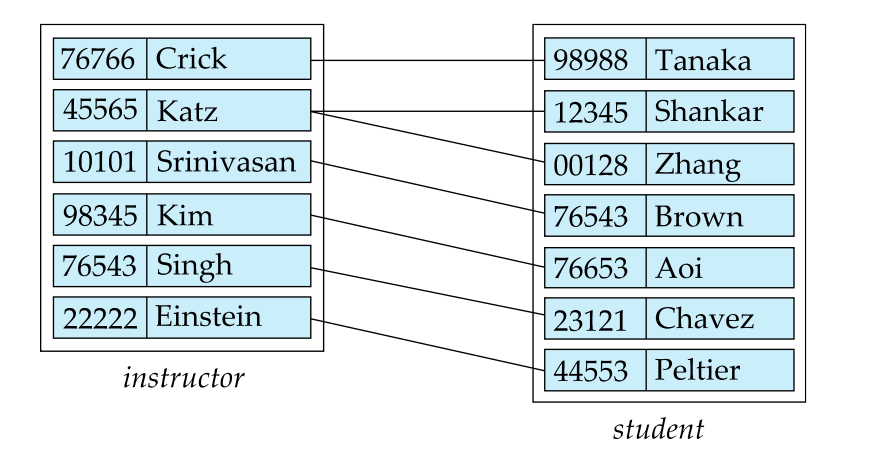
三、复杂属性(Complex Attributes)
| 类型 | 说明 | E-R图表示 | 示例 |
|---|---|---|---|
| 简单属性 | 不可再分 | 单行文本 | age INT |
| 复合(composite)属性 | 可分解为子属性 | 树状结构 | address(street, city) |
| 多值(multivalued)属性 | 多个取值 | 花括号 {} |
{phone_number} |
| 派生(Derived)属性 | 由其他属性计算得到 | 括号 () |
age() |
1. 简单属性（Simple Attribute）
- 定义：不可再分的原子值，如整数、字符串等。
- E-R图示例：直接列在实体框内。
- SQL实现示例：使用基本数据类型（
INT,VARCHAR,DATE等）。
2. 复合属性（Composite Attribute）
- 定义：由多个子属性组成的属性（如地址包含街道、城市、邮编）。
- E-R图示例：树状结构或嵌套表示（下图那种缩进）。
- SQL实现：
- 方案1：拆分为独立字段（不赘述，懂的都懂）。
- 方案2：使用结构化类型。
3. 多值属性（Multivalued Attribute）
- 定义：一个属性可包含多个值（如用户有多个电话号码）。
- E-R图示例：用花括号
{}标注。 - SQL实现示例：使用数组类型（仅限支持数组的数据库如PostgreSQL）。
4. 派生属性（Derived Attribute）
- 定义：通过计算其他属性得到（如年龄 = 当前日期 - 出生日期）。
- E-R图示例：用括号
()标注。 - SQL实现：
- 方案1：通过视图动态计算。
- 方案2：使用生成列（Generated Column）。
四、映射基数约束
基数约束描述两个实体集通过关系集关联时，每个实体可参与的关系数量限制。
1. 四种基数类型
- 一对一（1:1）：一个实体关联至多一个另一实体。
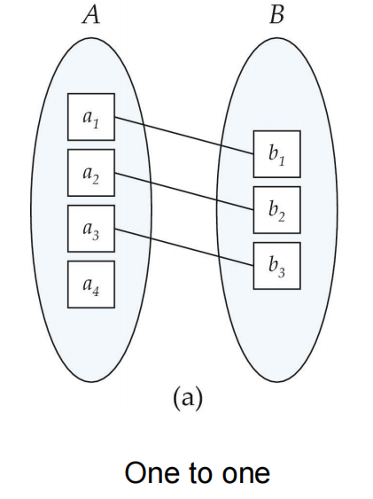
- 一对多（1:N）：一个实体关联多个另一实体。
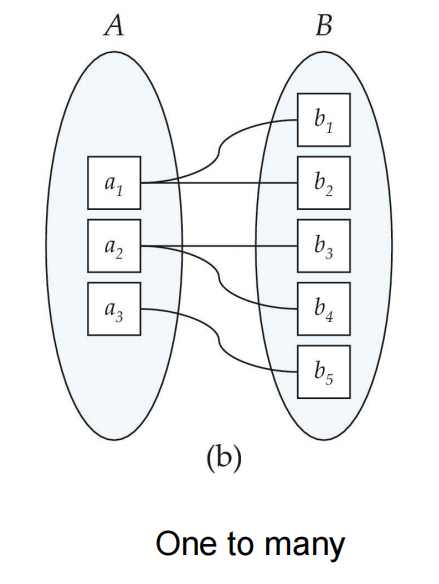
- 多对一（N:1）：多个实体关联至多一个另一实体。
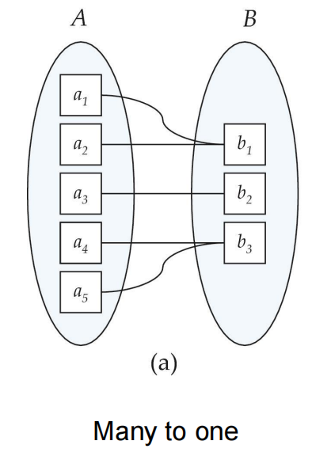
- 多对多（M:N）：多个实体互相关联。
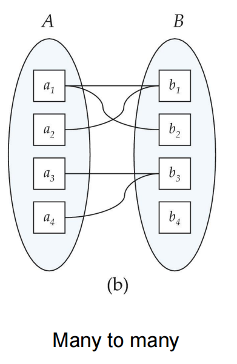
我们通过在关系集和实体集之间绘制有向线（\(\rightarrow\)或者\(\leftarrow\)）表示“一个”，绘制无向线（—）表示“多个”来表达基数约束。
约束示例
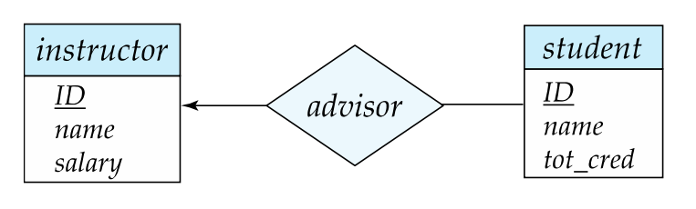
如上图，这表示了一个讲师可以和多个学生有指导关系，而一个学生只能选一个教师作为指导关系。2. 参与约束
- 全部参与（Total Participation）：双线(double line)表示（如学生必须有一个导师）。
- 部分参与（Partial Participation）：单线表示（如教师可能不担任导师）。
参与约束示例
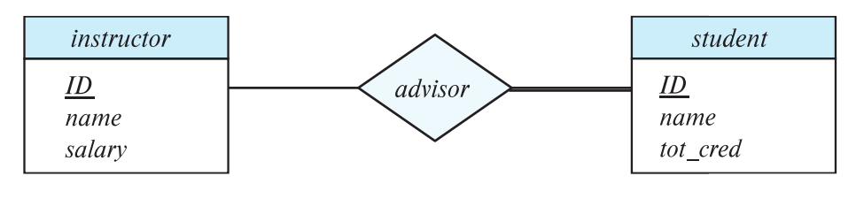
如上图，这表示了学生必须有指导关系的讲师，而讲师可能不在这个指导关系中。3. 更复杂的约束
用l..h 形式标注，用于定义实体参与关系的数量范围：
l（Minimum）：实体必须参与的最少关系数。h（Maximum）：实体可以参与的最多关系数。
l..h约束示例
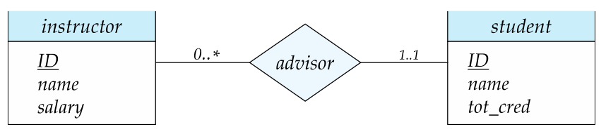
（星号*表示没有限制）如上图，这表示的是一个讲师可以和多个学生有指导关系（也可以一个关系都没有），而一个学生有且仅有一个讲师作为指导关系。五、主键设计
| 关系类型 | 主键规则 | 示例 |
|---|---|---|
| 1:1 | 任一端主键 | employee(ID) \(\leftrightarrow\) office(ID) |
| 1:N | "多"端主键 | department(dept_id) \(\rightarrow\) employee(dept_id) |
| M:N | 联合两端主键 | advisor(instructor.ID, student.ID) |
六、弱实体集
1. 标识实体 + 分辨符（Discriminator OR partial key）：
- 弱实体集：依赖于其他实体集（用于标识实体）存在的实体，无法独立标识。
- 分辨符：弱实体集内部唯一标识实体的属性。
弱实体集示例
听起来很抽象，这里举个例子：
CREATE TABLE section (
course_id CHAR(5), -- 标识实体的主键
sec_id CHAR(5), -- 分辨符（弱实体自身唯一标识）
semester VARCHAR(10),
PRIMARY KEY (course_id, sec_id),
FOREIGN KEY (course_id) REFERENCES course
);
section 表的主键是 course_id 和 sec_id。course_id是标识实体的主键，sec_id就是分辨符。
这里也可以看到，因为section只有sec_id是建立不起来滴，它依赖于course_id外键，照应了前面所说的弱实体集的定义。
唯一性保证：仅当course_id + sec_id组合时，才能唯一标识一个课程段（比如CMU 15-445和Spring共同组合唯一标识了这门课的一个课程段）。
2. 特点与E-R图表示
- 依赖强实体集：通过双矩形框和双菱形框表示。
- 分辨符：虚线下划标出。
比如在下面这个图例中，可以一眼盯真，很容易看懂。
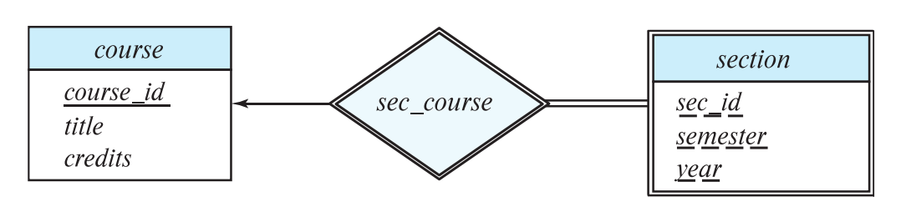
七、消除冗余属性
消除冗余属性并引入关系表，数据库设计就会更加规范化.
-- 错误：冗余存储 dept_name
CREATE TABLE student (
ID CHAR(5) PRIMARY KEY,
dept_name VARCHAR(20), -- 冗余字段
FOREIGN KEY (dept_name) REFERENCES department
);
-- 正确：通过关系表 stud_dept 关联学生与部门
CREATE TABLE student (
ID CHAR(5) PRIMARY KEY,
-- 不直接存储 dept_name
);
CREATE TABLE stud_dept (
student_id CHAR(5),
dept_name VARCHAR(20),
PRIMARY KEY (student_id),
FOREIGN KEY (student_id) REFERENCES student(ID),
FOREIGN KEY (dept_name) REFERENCES department(dept_name)
);
八、E-R图到关系模式的转换
转换规则
| E-R元素 | 关系模式规则 | 示例 |
|---|---|---|
| 强实体集 | 直接转换为表 | student(ID, name, tot_cred) |
| 弱实体集 | 包含标识实体主键 | section(course_id, sec_id) |
| 多值属性 | 独立表 + 外键 | inst_phone(ID, phone_number) |
| M:N关系 | 联合主键表 | advisor(s_id, i_id) |
多值属性处理
CREATE TABLE inst_phone (
ID CHAR(5),
phone_number VARCHAR(20),
PRIMARY KEY (ID, phone_number),
FOREIGN KEY (ID) REFERENCES instructor
);
九、扩展E-R特性
特化（Specialization）与概化（Generalization）
| 特性 | 说明 | E-R图表示 |
|---|---|---|
| 特化 | 自上而下划分（ISA关系） | person ◄--- ISA --- employee |
| 概化 | 自下而上合并共性 | student + teacher → person |
| 聚合 | 将关系抽象为实体 | proj_guide → evaluation |
+--------------+
| person |
|--------------|
| ID (PK) |
| name |
+--------------+
△
| ISA
+--------------+
| employee |
|--------------|
| salary |
+--------------+
十、设计中的常见问题
常见错误与解决方案
| 问题类型 | 错误示例 | 解决方案 |
|---|---|---|
| 实体 vs 属性混淆 | 将电话号码存储为属性而非实体 | 创建独立 phone 实体集 |
| 冗余关系集 | 显式存储可推导的关系 | 通过外键隐式关联 |
| 非必要非二元关系 | 使用三元关系 parents |
拆分为 father + mother |
设计决策对比
| 决策点 | 选项1 | 选项2 | 适用场景 |
|---|---|---|---|
| 属性 vs 实体 | 存储为属性 | 提升为实体 | 需额外信息时选后者 |
| 三元 vs 二元关系 | 保留三元关系 | 拆分为二元关系 | 自然关联时保留三元 |
有一说一，我觉得这章挺水的，把基础概念过完就差不多了。